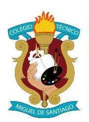

Colegio Técnico Industrial "Miguel De Santiago"
Título de Bachiller en "Electrónica De Consumo"
Sindicato de Choferes Profesionales de Pichincha
Licencia Profesional Tipo C
Centro de Educación Continua CEC
Suficiencia en el Idioma Extrangero Inglés